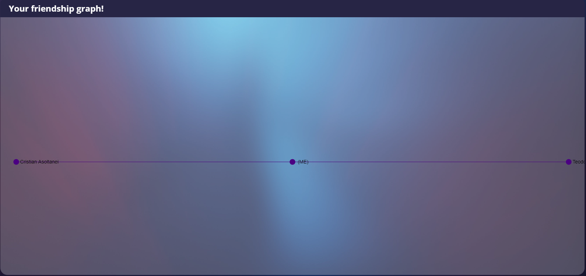
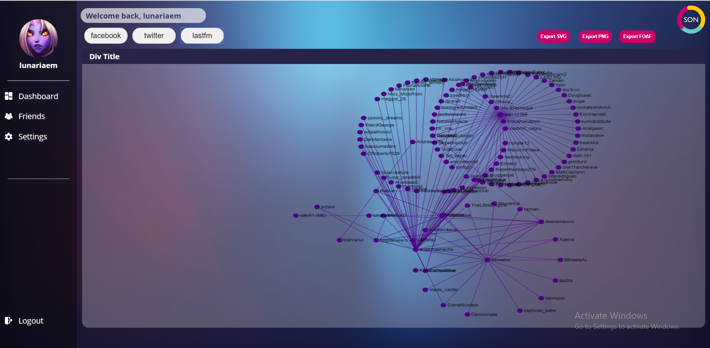
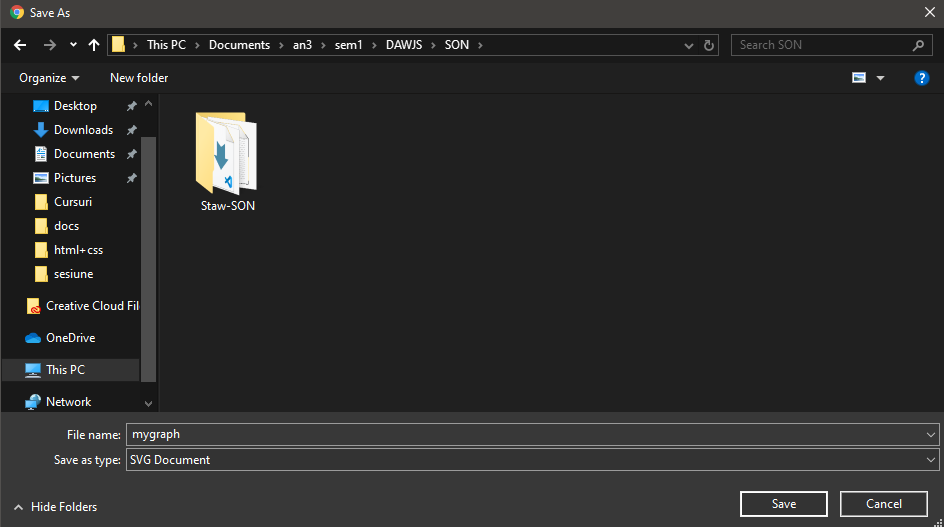
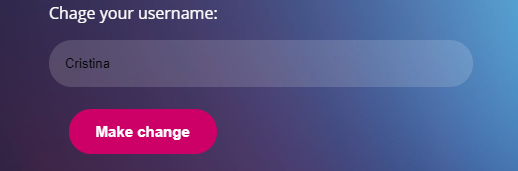
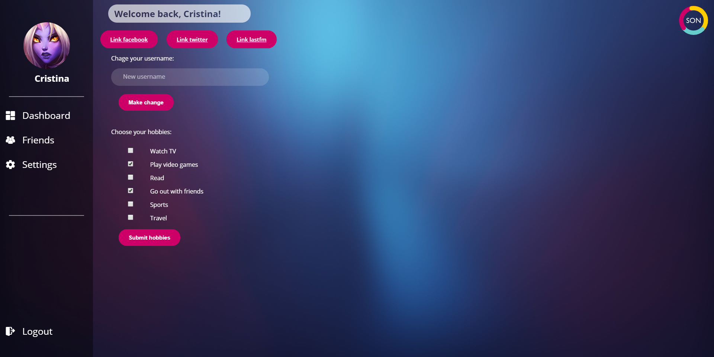
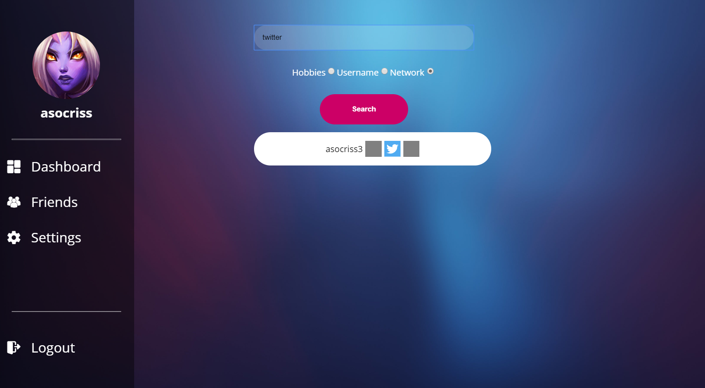

3. What Our Website Offers
3.1 Generate FoAF
Right on the first page you can see the FoAF graph container and the 3 social media platforms that we work with.
 3.2 Exporting FoAF
By clicking one of the three buttons located in the right upper side of the graph container, you can choose to export your graph.
Just choose a format: SVG, PNG of XML.
3.3 Linking your accounts
We offer support for 3 social media platforms: Facebook, Twitter and Last.fm. By clicking one of the buttons, you can link you accounts to our application.
3.4 Change your username
In the settings page, you can input thhe new username that you want and then click the Make change button to commit to your changes.
>  3.5 Add hobbies
In the settings page, you the the possibility to choose your hobbies so you can filter your friends later on!
Just tick a checkbox and click the button for submitting.
3.6 Filter friends
You can filter your friends by username, hobbies and network. After choosing one of the, the accounts of your friends will be shown below. You can also access the link to their profile on that platform.
